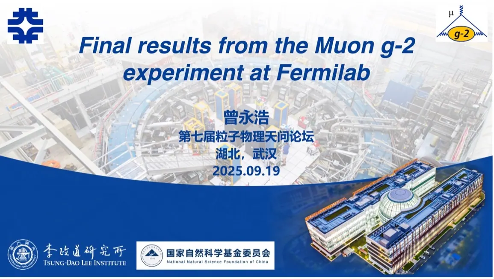

From September 18 to 22, 2025, the 7th Tianwen Forum on Particle Physics (第七届粒子物理天问论坛) was held at China University of Geosciences in Wuhan. Co-hosted by several universities, including Hunan University and Central South University, the forum aimed to strengthen academic collaboration and to discuss future directions for particle physics and the planning of major national scientific projects in China. The agenda covered a wide range of experimental platforms and the latest interdisciplinary progress in the field.
During the forum, Mr. Yonghao Zeng, a PhD student in our group, gave an invited presentation titled “Muon g-2 Status”. His report gave a comprehensive overview of the latest progress, current challenges, and future roadmap of the international Muon g-2 experiment, a high-precision search for physics beyond the Standard Model, and prompted productive discussions among the attendees.


2025年9月18日至22日，第七届粒子物理天问论坛在中国地质大学（武汉）举行。论坛由湖南大学、中南大学等多所高校联合主办，旨在加强学术合作，探讨粒子物理的未来发展方向及我国重大科学工程的规划布局。会议议程涵盖众多实验平台以及该领域最新的交叉研究进展。
论坛期间，课题组博士研究生曾永浩应邀作了题为“Muon g-2 Status”的报告，全面介绍了国际缪子反常磁矩（Muon g-2）实验——一项寻找超出标准模型新物理的高精度实验——的最新进展、当前挑战与未来路线图，引发了与会者的热烈讨论。